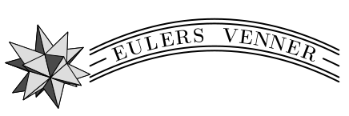

Tidligere foredrag
- Coxeter-friser og p-anguleringer af Peter Jørgensen den 01/12/2020
- Konvekse polygoner, cirkler og Einsteinmetrikker af Andrew Swann den 12/11/2019
- Oktioner af Jens Carsten Jantzen den 14/05/2019
- Fouriertransformation af Bent Øsrted den 04/04/2019
- Linear algebra over finite fields af Sergey Arkhipov
- Riemanns nulpunkter af Simon Kristensen den 15/05/2018
- Probing 3D Topology via Shapes af Cristiano Spotti den 03/05/2018
- Matematik og Atomer af Søren Fournais den 17/04/2018
- Noget af matematikken bag navigation \ (Kronometer - Mercator - Hyperbel - GPS/Galileo) af Johan Peder Hansen den 24/11/2016
- Homotopier overalt af Marcel B den 15/11/2016
- Regularitet og rekonstruktion af Andrew du Plessis den 26/05/2016
- Proof assistants for mathematics and computer science af Robbert Krebbers den 14/04/2016
- Matematik og magnetisme af Jacob Schach Møller den 19/11/2015
- Abels undtagelser og modeksempler til Cauchy af Henrik Kragh Sørensen den 05/11/2015
- Euklids algoritme --- nu også for matricer af Niels Lauritzen den 01/10/2015
- I'm counting the cattle... af Simon Kristensen den 15/09/2015
- Fraktaler og lange kystlinjer af Andreas Basse-O'Connor den 03/09/2015
- Faber-Krahn uligheden og omrokeringsuligheder af den 13/05/2015
- An introduction to Knot Contact Homology af Yang Huang den 28/04/2015
- Hvad kan jeg blive som matematiker? af den 12/03/2015
- Stokastiske processer og nogle af deres anvendelser af Jan Pedersen den 19/02/2015
- Perron-Frobenius Teori for Uendelige Matricer (slides) af Klaus Thomsen den 09/10/2014
- Additive og multiplikative funktioner af den 23/09/2014
- Game of Life & Garden of Eden (slides) af Benjamin Randeris Johannesen den 11/09/2014
- The Tomato Salad Problem af Markus Kiderlen den 06/05/2014
- 25 års jubelæum, fødselsdagsforedrag af Johan P Hansen den 11/04/2014
- Erhvervsforedrag (slides) den 26/02/2014
- CSGB - et tværvidenskabeligt forskningsmiljø af Eva Bjørn Vedel Jensen den 04/02/2014
- Glæder, udfordringer og frustrationer som
matematiker/statistiker i et
tværvidenskabeligt miljø med ‘Big Data’ af Asger Hobolth den 28/11/2013
- Robinson-Schensted algoritmen og
repræsentationsteori af Jens Carsten Jantzen den 21/11/2013
- Polynomier og primtal af Henning Haahr Andersen den 26/09/2013
- Konvekse funktioner, Jensens Ulighed og andre vigtige uligheder af den 05/09/2013
- Heisenbergs ubestemthedsrelationer af Nils Byrial Andersen den 28/05/2013
- Hvad kan jeg blive -- som matematiker? af den 14/05/2013
- Stamfunktionen der blev væk af Thomas Lundsgaard Schmidt den 12/04/2013
- Fri sandsynlighedsteori -- et introducerende overblik af den 11/03/2013
- A+B=C - Skæg med tal og bogstaver af Simon Kristensen den 15/11/2012
- Klassikation af mangfoldigheder af Marcel Bökstedt den 09/10/2012
- Quivers, their representations and quiver varieties af Sergey Arkhipov den 20/09/2012
- Knudeteori af Jens-Jakob Kratmann Nissen den 04/09/2012
- Indre volumener af konvekse mængder af Anne Marie Svane den 22/05/2012
- Den tropiske rang af en matrix af Anders Nedergaard den 08/05/2012
- Eulers Polyedersætning og Cauchys Rigiditetssætning af Jørgen Tornehave den 16/04/2012
- Verdenen er styret af Cayley-Dickson af Andrew Swann den 14/02/2012
- Integralbegrebet af Jørgen Hoffmann-Jørgensen den 07/11/2011
- Gennem kaninhullet: Hvordan matematikken blev moderne (slides) af Henrik Kragh Sørensen den 04/10/2011
- Taxa-ture, tuberkulose og talteori af Simon Kristensen den 20/09/2011
- Cantormængden af Rune Esdahl-Schou den 06/09/2011
- Uendelige tal af Hans Anton Salomonsen den 17/05/2011
- Hvorfor al den hype om repræsentationsteori - også blandt analytikere? af Emil Axelgaard den 15/04/2011
- Hvorfor al den hype om repræsentationsteori? af Khalid Rian den 03/03/2011
- Singulariteter i geometri og topologi af Andrew du Plessis den 03/02/2011
- Lokalkompakte groupoider og operatoralgebraer af Klaus Thomsen den 14/12/2010
- Grafer med egenværdier tex:\geq -2 af Jens Kjærgaard Boldsen den 11/11/2010
- Hvad er en invariant? af Rasmus Villemoes den 14/09/2010
- Underrum og koggere af Jens Carsten Jantzen den 15/04/2010
- Net (slides) af Jacob Schach Møller den 08/03/2010
- Funktionalligninger af Henrik Stetkær den 22/02/2010
- Stone-von Neumanns sætning af Søren Fuglede den 11/25/2009
- Wigner's semi-cirkel lov (slides) af Steen Thorbjørnson den 09/12/2009
- Primtal - hvor mange, hvordan og hvorfor (slides) af Johan P. Hansen den 06/10/2009
- Poincaré-formodningen af Johan Dupont den 26/05/2009
- tex:\pi's historie af Kasper Andersen den 15/04/2009
- Fire-farve sætningen af Jørgen Brandt den 05/03/2009
- Uligheder og betonfabrikker af Niels Lauritzen den 26/11/2008
- Hadamardmatricer af Jonas Lindstrøm den 12/10/2008
- Udvalgsaxiomet af Jørgen Hofmann-Jørgensen den 16/09/2008
- Fejlkorrigerende koder af Jan Agentoft Nielsen den 10/09/2008
- 'Can one hear the shape of' en analytiker? af Søren Fournais den 10/08/2008
- CTQM - Matematiske aspekter i teoretisk fysik af Jørgen Ellegaard Andersen et. al. den 22/05/2008
- Thiele Centret - et tværvidenskabeligt forskningsmiljø af Eva Bjørn Vedel den 14/05/2008
- Spas og kalas i tex:\zeta-land af Simon Kristensen den 15/04/2008
- 8. december 2005: Jørgen Tornehave fortalte om Ikke-Euklidisk geometri.
- 17-24. oktober 2005: Eulers Venner var på studietur til Skt. Petersborg, hvor Euler boede og arbejdede. Der er masser af billeder fra turen; indtil videre kan nogle af dem ses her
- 12. oktober 2005: Kirsti Andersen fra Steno Instituttet holdt gult foredrag om perspektivbegrebet under overskriften "Matematikken i kunstens tjeneste".
- 30. september 2005: Benny Madsen holdt foredrag om sit bachelorprojekt, Banach-Tarskis paradoks.
- 22. september 2005: Jimi Lee Truelsen holdt et studenterforedrag under overskriften "Hvor mange primtal er der?".
- 24. maj 2005: Demitri Fedorov (IFA) afsluttede foredragsrækken om Millennium Problemerne med et foredrag om Yang-Mills and Mass Gap. Billeder.
- 18. maj 2005: Jørgen Ellegaard holdt et velbesøgt foredrag om det sjette Millennium-problem, Poincaré-formodningen. Billeder.
- 11. maj 2005: Der blev afholdt informationsmøde om studieturen til Skt. Petersborg til efteråret. Efter fremmødet at dømme er der rigelig opbakning til at turen faktisk bliver gennemført.
- 3. maj 2005: Johan Dupont holdt det femte Millennium-foredrag. Emnet var denne gang Hodge-formodningen. Billeder.
- 19. april 2005: Vi fejrede Eulers 298 års fødselsdag. Bent Ørsted holdt i anledningen et foredrag om Variationsregning. Billeder: foredrag, lagkage i Staff Lounge.
- 7. december 2004: Helge Møller Pedersen holdt bachelorforedrag om sit bachelorprojekt, Lænketal og Poincaredualitet. Billeder.
- 30. november 2004: Johan P. Hansen holdt det fjerde Millenium-foredrag. Emnet var Birch og Swinnerton-Dyer-formodningen. Billeder. Slides.
- 16. november 2004: Erik Skibsted holdt det tredje Millenium-foredrag. Emnet var Navier-Stokes-ligningerne. Billeder.
- 9. november 2004: Emil fortalte om sit bachelorprojekt, der handlede om Serres spektralfølge for en fibrering. Billeder.
- 4. november 2004: Alexei Venkov holdt det andet Millennium-foredrag. Emnet var Riemann-hypotesen. Billeder.
- 28. september 2004: Peter Bro Miltersen (DAIMI) holdt det første Millennium-foredrag, hvor han fortalte om P vs. NP-problemet.
- 21. september 2004: Michael Knudsen fortalte om sit bachelorprojekt, "Stialgebraer og Hallalgebraer".
- 15. september 2004: Robin Wilson fra Oxford Universitet fortalte om matematikeren Lewis Carroll; forfatteren bag Alice i Eventyrland.
- 27. maj 2004: Under stor mediebevågenhed holdt John Donaldson sin første forelæsning, "Catastrophe in a Biological Context", som gæsteprofessor. Aud. E var næsten helt fyldt!
- 20. april 2004: Årets fødselsdagsforedrag, "Matematik og retfærdighed", blev afholdt af professor Ebbe Thue Poulsen.
- 6. april 2004: Bachelor-foredrag ved Mikkel Kamstrup om Overlejringsrum og Galoisteori.
- 11. februar 2004: Rundt om uendeligheden ved Vagn Lundsgaard Hansen.
- 13. maj 2003: En elementær introduktion til Minkowskis geometriske talteori ved Hans Jørgen Munkholm. En beskrivelse af foredraget er tilgængelig som PDF, PostScript og ConTeXt.
- 11. april 2003: I anledning af Eulers fødeselsdag holdt Frank Nasser et fødselsdagsforedrag, og efter dette blev der serveret lagkage og portvin i Staff Lounge. En beskrivelse af foredraget er tilgængelig som PDF, PostScript og ConTeXt.
- 19. marts 2003: Vi viste filmen "N is a number", et portræt af matematikeren Paul Erdös. En beskrivelse af arrangementet er tilgængelig som PDF, PostScript og ConTeXt.